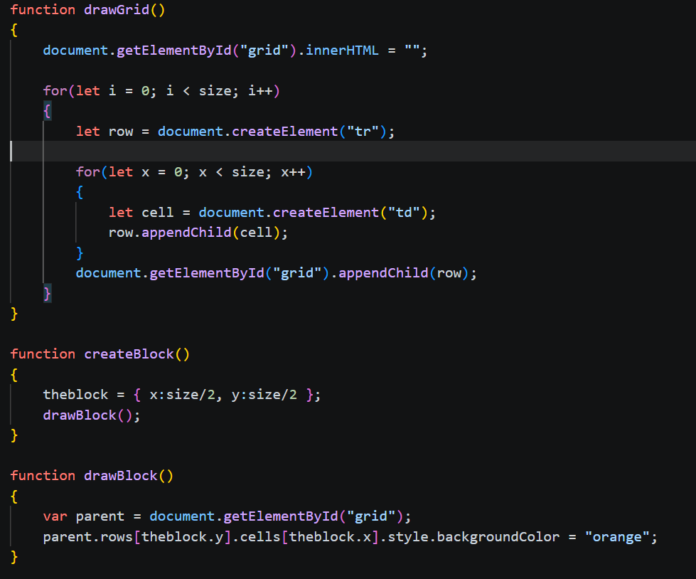

Lesson 2 of 4
Learn to create the grid that the game will be played on
In this section you will learn to create a functional grid using javascript, there is already a html and css base implemented within the backend of this website so all that you will have to focus on is creating the grid via javascript.

These are the functions that will help create the grid. The drawgrid function is what manipulates the dom and makes it so that the grid is created and can be used later on in the project. After that is the create block function which finds the center of the grid to later on call upon the drawblock function. The draw block will create a different colored block in the middle of the grid that shall later be the snake character that you are controlling. Now you will have to semi rebuild this code in the console below in order to fully understand it
Here we have set up some variables and built our own html base. Try changing the variables to change the html base and learn about dom